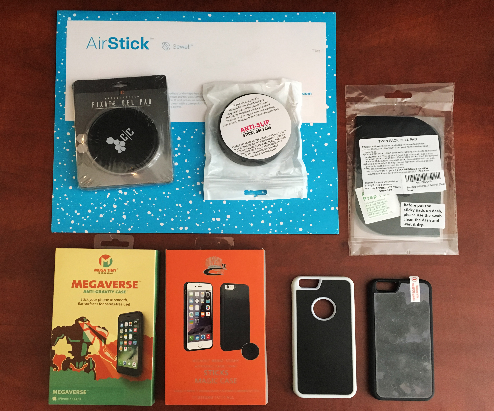

Attachment Guide
How to attach your phone to your instrument
To take full advantage of Vulse's interactive features, you'll need some way to we recommend using a micro-suction phone case to temporarily affix your device to your instrument.
If you're using Vulse with a guitar, bass, or another instrument with enough flat space to adhere your phone (keytar, anyone?), then it's as simple as getting one of the micro-suction cases recommended below.
Note: Before buying anything, ensure there's space your instrument by putting your phone flush against it. At least 60% of the phone's back should be contact with a flat surface. If the surface is curved or crowded by small screws, then skip to the next section.
Our Recommendation

(There's also a version of this with useful backplates like a wallet, mirror, and bottle opener. It'll work exactly the same for Vulse, but get it if you're interested in the extra utility: Amazon link.)
So this is the one I use: Goat Case. It sticks very securely, and comes off easily without affecting the finish even the tiniest bit. (I had to cut away some of the material near the ports, though, to allow my iRig adapter to plug in. You might not have this issue, but it only took a minute for me to fix and doesn't affect the case's functionality.)
Other Options
That being said, really any of the cases on this list should work, depending on your phone and guitar. A lot of these cases have lower ratings than you'd expect, but I wouldn't worry about that: Many surfaces (drywall, brick, cement, etc) are actually pretty bumpy, so the material doesn't stick well to them, hence the poor reviews. But micro-suction material works perfectly for totally flat surfaces like a guitar face or pickguard.
If your guitar has a pickguard:
Before buying anything, quickly check if your phone can sit on the pickguard without the screws stopping it from sitting flat against the guard. If it can sit flat, then an anti-gravity case will work great. Otherwise, you can use a circular pad like this, or a sheet like this which you can cut to shape, and stack if you need the extra thickness to clear the screws.
Other options:
And if you don't want to use micro-suction for whatever reason, you can also use hook & loop tape. This isn't the exact brand I used, but I used similar stuff directly on my guitar body many times when we were first prototyping Vulse (YT: Chaos Pad)Click to play video inline. and had zero residue or damage.
